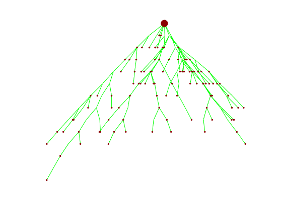
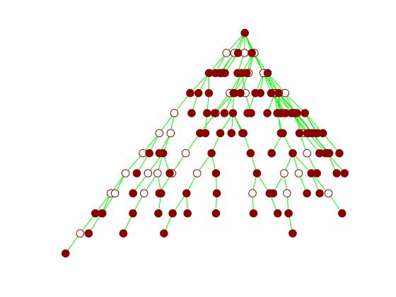
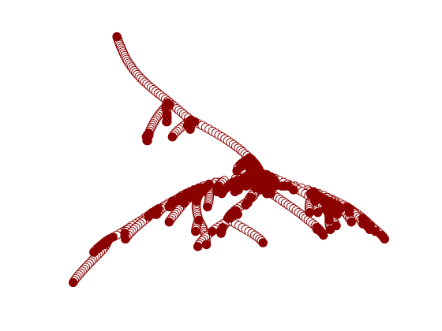

Grow Lineages along Minimum Spanning Tree for B Cell Recptor Seqeuence Data
This page provides some examples of using source code version of GLaMST.
Contents
Prepare environment
Set working directory to the upzipped folder. If your matlab does not have C/C++ compiler setup, need to first install MinGW, instructions at following link (Home->Add-Ons->search MinGW->install) https://www.mathworks.com/help/matlab/matlab_external/install-mingw-support-package.html
restoredefaultpath; addpath lib addpath src mex src/editDist_only.cpp mex src/backtrace.cpp
Building with 'Microsoft Visual C++ 2013 Professional'. MEX completed successfully. Building with 'Microsoft Visual C++ 2013 Professional'. MEX completed successfully.
Simulate data
Simulate a dataset that
operation_probability = [0.99 0.005 0.005];% mutation, insertion, deletion chance sequence_length = 300; % Length of the seqeunces num_tree_nodes = 200; % Total number of the real tree sample_size = 100; % Number of observed nodes rng(42); %% Fix the random seed; [observed_sequences, true_sequences, adj, is_selected] = simulate_data_v2(... sequence_length,num_tree_nodes,sample_size,operation_probability); draw_hierarchy_tree(adj, is_selected');
Simulation:
simulate a tree with 200 nodes, and 101 observed sequences (include root) .... 200
obtained tree size: 144 nodes, 101 observed sequences.
 Run GLaMST and visualize the results
This section is a example of using GLaMST. You need to pass a variable "observed_sequences" that contain a cell array of known sequences to function "reconstruct_tree_minimun_tree_size". Make sure the first sequence of "observed_sequences" should be root(G.L.). "reconstructed_nodes" is a cell array of sequences of the reconstructed tree. "reconstructed_is_selected" is the index of tree nodes that known before the reconstruction. "reconstructed_directed_adj" is the adjecent matrix that represent the hierarchical structure of the tree.
[reconstructed_nodes,mst_adj,reconstructed_is_selected, reconstructed_directed_adj] = ...
reconstruct_tree_minimun_tree_size(observed_sequences);
draw_hierarchy_tree(reconstructed_directed_adj, reconstructed_is_selected);
Reconstruction:
Initialization compute pairwise edit distance: 100 / 101Elapsed time is 1.944908 seconds.
Iteratived build the tree: 1 / 100 Iteratived build the tree: 2 / 100Elapsed time is 0.122880 seconds.
Iteratived build the tree: 3 / 99Elapsed time is 0.065291 seconds.
Iteratived build the tree: 4 / 98Elapsed time is 0.061145 seconds.
Iteratived build the tree: 5 / 98Elapsed time is 0.097610 seconds.
Iteratived build the tree: 6 / 97Elapsed time is 0.061575 seconds.
......
Iteratived build the tree: 141 / 2Elapsed time is 0.006475 seconds.
Iteratived build the tree: 142 / 1Elapsed time is 0.005673 seconds.
Iteratived build the tree: 143 / 0Elapsed time is 0.003512 seconds.
Trim the tree for un-necessary nodes ...
Rewire the tree to further reduce size ... 143
 Generate lineage tree from real data
Given this data is not yet publicly avaliable, we have simulated a dataset that has exactly the same topology as used in our paper ( with sequences order shuffled and nucleobase exchenged). This simulated data is avaliable here https://github.com/xysheep/GLaMST/blob/master/demodata.
fsa = fastaread('demodata/real.fasta'); observed_sequences = {fsa.Sequence}'; [reconstructed_nodes,mst_adj,reconstructed_is_selected, reconstructed_directed_adj] = ... reconstruct_tree_minimun_tree_size(observed_sequences); draw_hierarchy_tree(reconstructed_directed_adj, reconstructed_is_selected);
Reconstruction:
Initialization compute pairwise edit distance: 541 / 542Elapsed time is 42.614710 seconds.
Iteratived build the tree: 1 / 541 Iteratived build the tree: 2 / 541Elapsed time is 1.257989 seconds.
Iteratived build the tree: 3 / 541Elapsed time is 1.303419 seconds.
Iteratived build the tree: 4 / 541Elapsed time is 1.212983 seconds.
Iteratived build the tree: 5 / 541Elapsed time is 1.208741 seconds.
Iteratived build the tree: 6 / 541Elapsed time is 1.233536 seconds.
Iteratived build the tree: 7 / 541Elapsed time is 1.191659 seconds.
Iteratived build the tree: 8 / 541Elapsed time is 1.195771 seconds.
......
Iteratived build the tree: 1823 / 5Elapsed time is 0.110148 seconds.
Iteratived build the tree: 1824 / 4Elapsed time is 0.110480 seconds.
Iteratived build the tree: 1825 / 3Elapsed time is 0.117508 seconds.
Iteratived build the tree: 1826 / 2Elapsed time is 0.129545 seconds.
Iteratived build the tree: 1827 / 1Elapsed time is 0.107900 seconds.
Iteratived build the tree: 1828 / 1Elapsed time is 0.700191 seconds.
Iteratived build the tree: 1829 / 0Elapsed time is 0.122778 seconds.
Trim the tree for un-necessary nodes ...
Rewire the tree to further reduce size ... 1192
Rewire the tree to further reduce size ... 1191 Elapsed time is 7.799285 seconds.
Rewire the tree to further reduce size ... 1190 Elapsed time is 4.242021 seconds.
Rewire the tree to further reduce size ... 1190 Elapsed time is 4.248689 seconds.
Rewire the tree to further reduce size ... 1190 Elapsed time is 4.290912 seconds.
